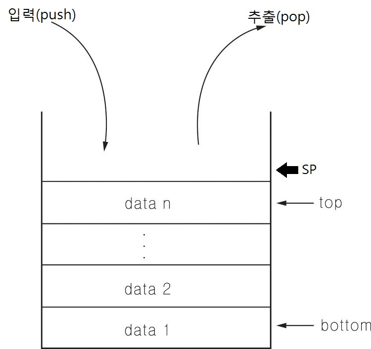

01 스택(Stack)
1. 스택이란?
스택이란 후입선출(Last in first out; LIFO), 즉 먼저 들어온 데이터일수록 나중에 추출되는 방법으로 데이터를 저장하고 추출하는 데이터 구조입니다.
쌓아둔 책을 생각하면 이해하기가 쉬운데, 가장 아래에 있는 책을 꺼내기 위해서는 위에 있는 책을 치워야 하듯이, 아래쪽에 있는 데이터를 추출하기 위해서는 위쪽에 있는 데이터, 즉 최근에 들어온 데이터가 먼저 추출되어야 합니다.

2. 용어 설명
|
용어 |
설명 |
|---|---|
| SP(Stack Pointer) |
스택에서 현재 들어오게 될 데이터의 위치를 가리킵니다. 항상 마지막 데이터보다 한 칸 뒤(그림 상으로는 위)를 가리킵니다. |
| 입력(Push) |
SP가 가리키는 곳에 데이터를 저장하는 것을 말합니다. 이 작업을 시행한 후 SP는 다시 한 칸 뒤(그림 상으로는 위)로 이동합니다. |
| 추출(Pop) |
SP가 가리키는 곳의 한 칸 전, 즉 마지막 데이터를 추출하는 것을 말합니다. 이 작업을 시행한 후 SP는 다시 한 칸 앞(그림 상으로는 아래)으로 이동합니다. |
| 스택 오버플로우(Stack Overflow) |
스택의 크기보다 더 많은 양의 데이터를 저장하려 시도할 때 나타나는 현상입니다. 컴파일 에러는 발생하지 않으나 프로그램 실행시 오류가 발생합니다. |
| 마지막 데이터(top) |
추출한다면 나오게 될 데이터를 말합니다. |
| 처음 데이터(bottom) |
가장 마지막에 나오게 될 데이터를 말합니다. |
이 프로그램에서는 사용자가 별도로 데이터를 저장할 수 없으며, 단순히 입력과 출력의 형태를 숫자를 통해 보입니다.
3. 예제
다음과 같은 형태로 스택이 구성되려면 입력(Push)과 추출(Pop)을 어떠한 과정을 거쳐 진행해야 하는지를 기술하시오.
(단, 쓰여 있는 숫자는 서수이다.)
|
|
|
|
|
35 |
|
27 |
|
24 |
|
23 |
|
22 |
|
19 |
|
14 |
|
13 |
|
6 |
|
5 |
|
1 |